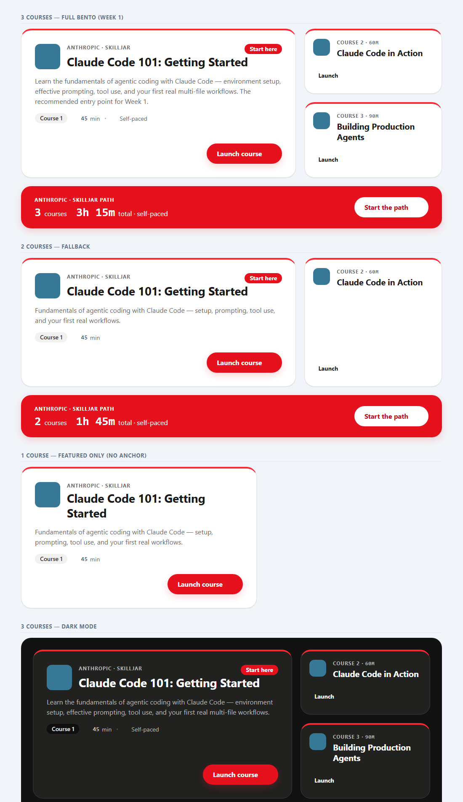

New container frontend/src/components/portal/anthropic-bento/AnthropicCoursesBento.tsx — takes the whole Skilljar course list and arranges featured entry tile + compact supporting tiles + cherry path-anchor (computes count + total duration); 1 / 2 / 3+ responsive fallbacks.
New scoped stylesheet anthropicBento.css — the official Colaberry Design System (cherry/leaf/berry, Roboto + Roboto Mono, radius-xl/pill, cb-card/badge/btn), scoped under .acw-ds so the navy portal is untouched.
PortalSessionDetailPage.tsx — the per-card map replaced with a single <AnthropicCoursesBento />.
Verified render — all states

Headless render (Edge) of the real component CSS. Top → bottom: 3-course full bento (featured spans two stacked compacts + full-width cherry path anchor), 2-course fallback, 1-course featured-only, and dark mode. Icon glyphs are blank here only because the Bootstrap Icons CDN font is network-blocked in headless capture — they render in the portal, which already links the font.
Judgment calls (logged, no governance boundary)
Icons: RemixIcon (DS default) swapped for Bootstrap Icons, already loaded by the portal — avoids a new icon-font dependency.
"Start the path" CTA: points at the featured (lowest-numbered) course URL since no separate path URL exists yet — spec flagged this destination as TBD.
Grid: the spec's fixed 3-up grid generalized to featured-spans-compacts so 4+ courses never break (pixel-identical to the spec at exactly 3).
Hardened: compact ghost CTA bumped 38px → 44px (DS/WCAG touch goal); prefers-reduced-motion disables hover transforms. Dark-mode tokens present but inert until the portal adds a dark toggle.